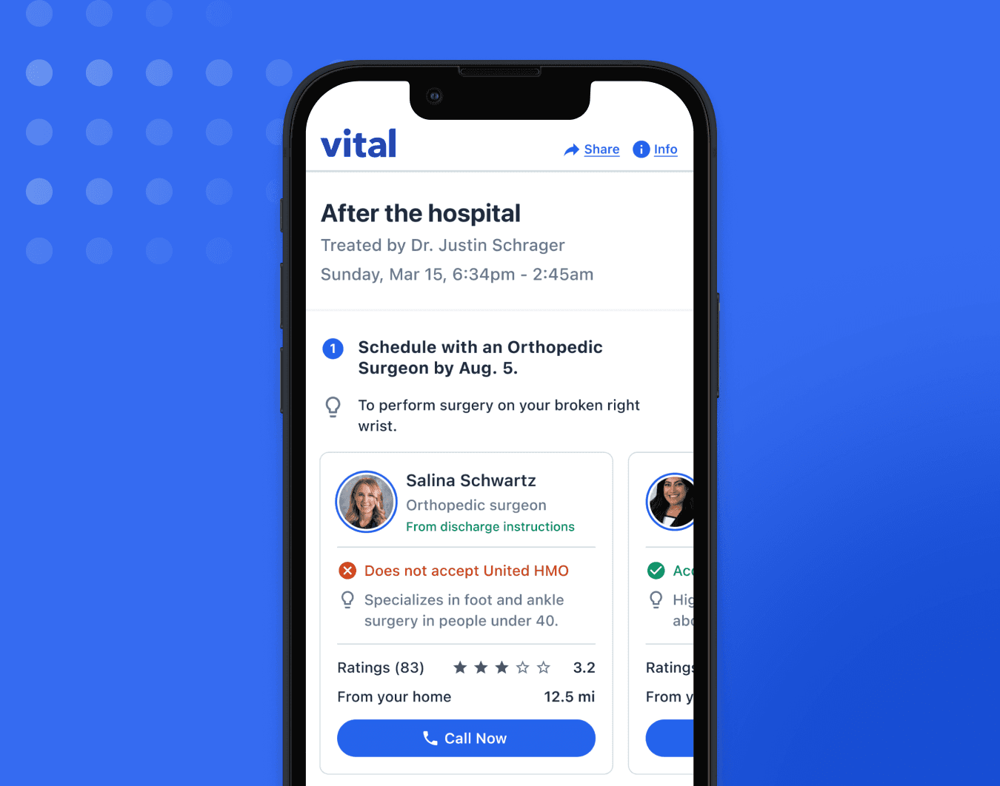
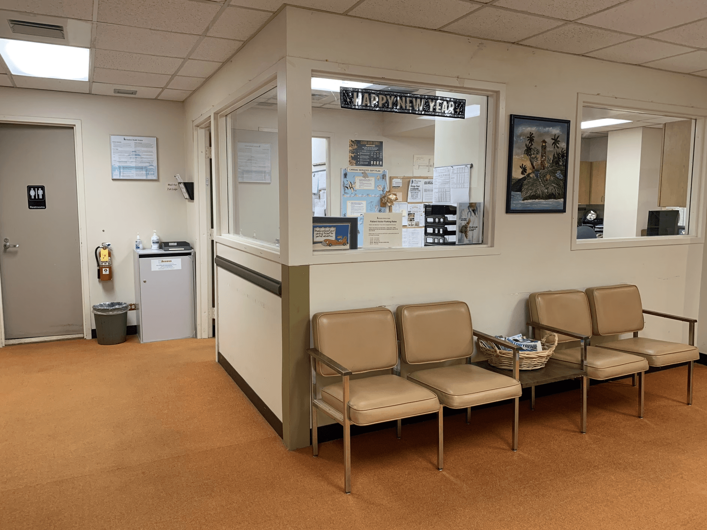
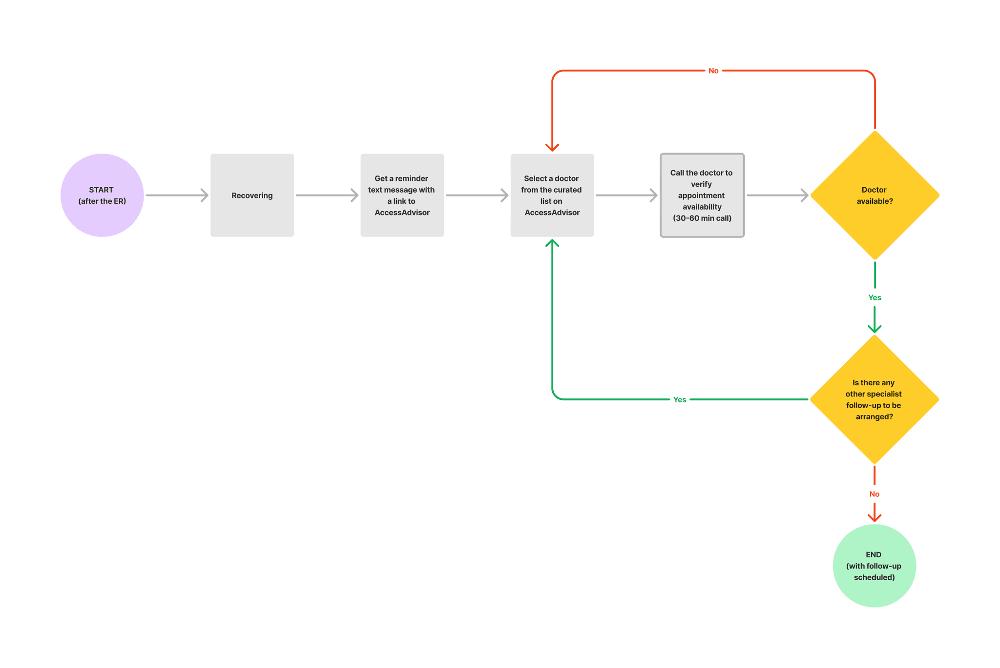
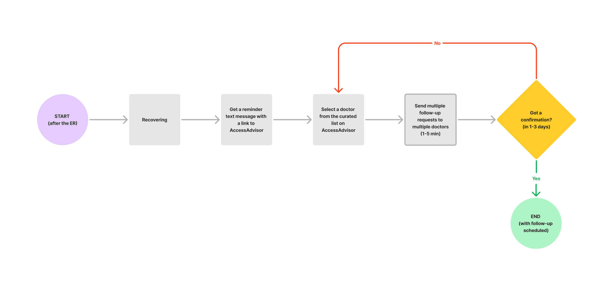
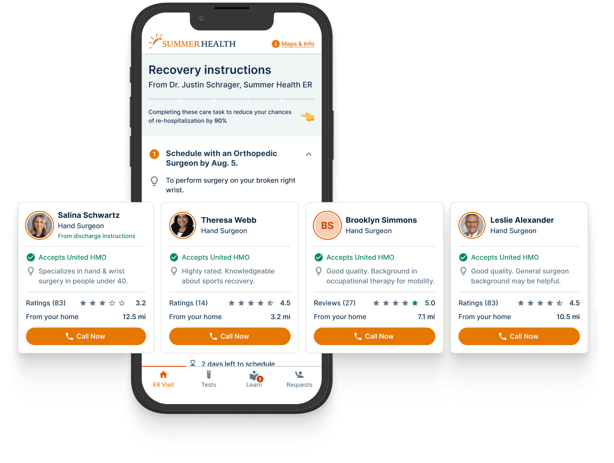
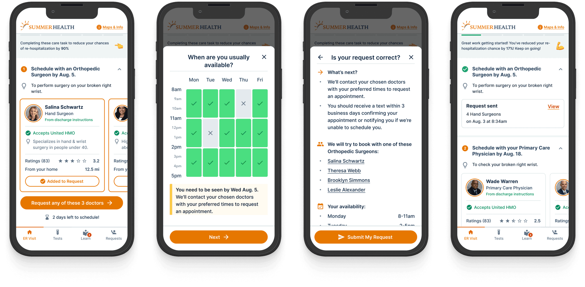
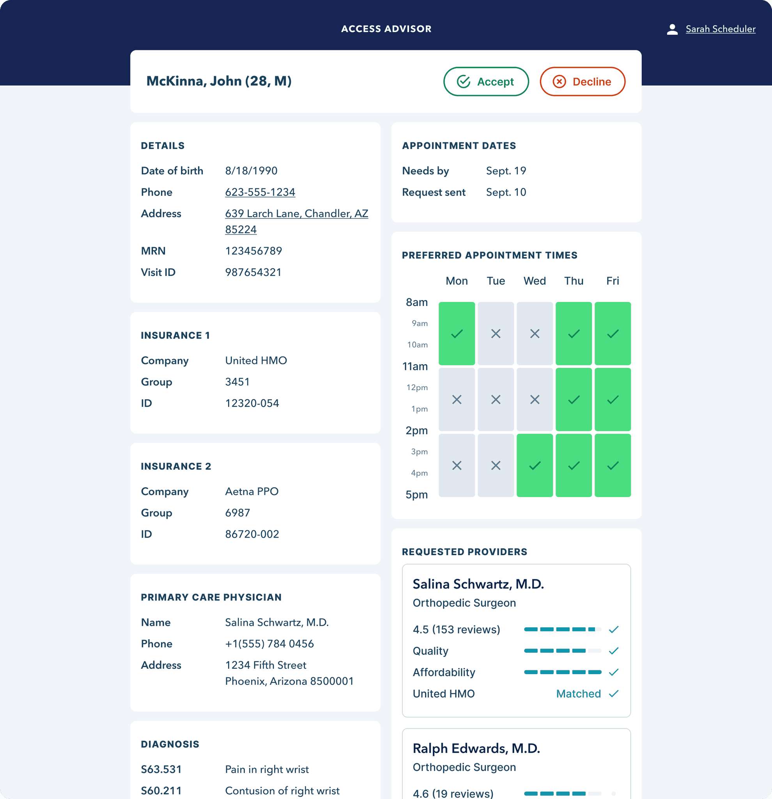
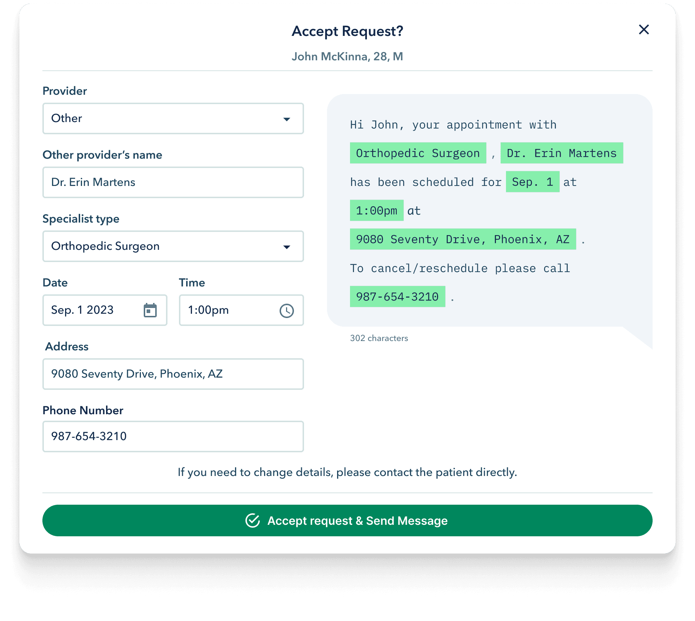

ER follow-up appointments with 10x conversion

AccessAdvisor simplifies the process of scheduling follow-up appointments for patients after an emergency room visit. It’s 5–10 times more effective than a standard hospital's "find-a-doc" system, with a 30% completion rate compared to just 3–4%. This not only reduces the risk of readmission but also saves lives and reduces costs for both patients and hospitals.
AccessAdvisor is a feature within Vital’s ERAdvisor, a patient experience platform for hospitals.
My role
I worked as a Senior Product Designer at Vital from 2022 to 2024. Vital is an AI-driven patient experience platform used by hospitals across the U.S. During my time there, I executed designs, led usability testing, collaborated with other designers, and worked closely with engineering teams and product owners across various projects.
Key contributions include:
- AI-powered video education feature with 90% content relevancy. Link
- Doctor-to-patient AI translator that uses LLMs to turn medical jargon into simple, accurate content for patients.
- Incidental findings workflow to manage unexpected radiology results.
- Inpatient whiteboard (currently under NDA).
- And, of course, AccessAdvisor.
Objective: simplifying follow-up scheduling
After an ER visit, patients are often required to schedule follow-up appointments with specialists or their primary care physicians (PCPs). Unfortunately, this process can be a cumbersome, hours-long phone call that can cause patients to delay or avoid necessary follow-up care, increasing their risk of readmission and further health complications.
We had the opportunity to collaborate with the Dignity Health system to pilot an online booking system for orthopedic surgeons. However, due to technical limitations, this system could only send follow-up requests rather than confirmed bookings. The hospital would then manually approve or decline these requests, adding complexity to the project.
What interface should be designed?
- For patients, where they can send follow-up requests or call doctors for appointments
- For hospitals, where they can manage the follow-up requests

Approach: leverage existing tools, build minimal features
Building a fully-fledged scheduling system would require significant development and a large provider network. Instead, we took a more focused, MVP approach by leveraging our existing ERAdvisor platform, which tracks the patient journey through the ER. With a 60% adoption rate (compared to just 6% for competitors), ERAdvisor was a strong foundation.
MVP goals:
- Recommend doctors based on insurance, distance, and quality.
- Allow patients to call doctors directly or send follow-up requests for orthopedic surgeons (as a pilot).
- Gather real usage data and iterate quickly.
Patient’s pain points
Our research identified several pain points related to follow-up scheduling in the U.S. Patients face several challenges:
- Finding specialists who accept their insurance.
- Determining proximity to their home.
- Evaluating doctor quality.
- Scheduling within the recommended timeframe.
A typical user journey involves patients feeling overwhelmed and ill-equipped to handle the follow-up process, leading to delays or failure to schedule. These were the main issues we aimed to address.
Problems in the flow:
- Complexity and Time Consumption: Patients are tasked with multiple steps that require a lot of manual effort (calling, searching for a specialist, verifying insurance, etc.).
- High Drop-Off Potential: The flow has multiple failure points where patients may drop off, especially at decision diamonds like “Remember to schedule a follow-up?” and “Doctor available and accepts insurance?”.
- End without Follow-Up: There are several opportunities for the process to end without successfully scheduling a follow-up, which could negatively affect patient care.
Solution
- Reminders: Timely, repeated messages prompting patients to schedule their follow-up.
- Doctor recommendations: A curated list of doctors tailored to each patient’s needs, based on:
- Accepted insurance.
- Proximity to the patient’s home.
- Doctor quality and affordability.
- Sending follow-up requests: A system that allows patients to send follow-up appointment requests to orthopedic surgeons, with phone call scheduling as the main fallback for Dignity Health hospitals in a pilot program.

The AccessAdvisor user flow for call only scheduling

The AccessAdvisor user flow for sending follow-up requests
Iterative process:
Our main KPI was the conversion rate, measured by the number of “Call to Schedule” clicks and follow-up requests sent.
- Usability testing uncovered pain points in the user flow.
- Silent releases allowed for real-world data collection and improved feature iterations.
- Session monitoring (via DataDog) helped identify usability issues on different devices and settings.
Testing our hypotheses
We uncovered these insights through usability testing and by comparing KPIs across different versions of the product.
Convenience vs. Certainty
We assumed patients would prefer sending follow-up requests over waiting on hold to schedule by phone. However, our tests revealed the opposite: patients preferred the certainty of a phone call, even if it meant waiting, over the uncertainty of a request that might be declined days later.
Displaying results upfront vs. hiding them behind a button tap
Displaying a list of doctors upfront versus hiding them behind a button had little impact on user performance. However, displaying too many options without further help to maintain focus (e.g. accordions) risked overwhelming patients.
Design showcase

Call only flow

Sending follow-up request flow

Follow-up request handling

Follow-up confirmation
Outcomes & impact
Improving follow-up scheduling addresses one of the most significant gaps in the U.S. healthcare system. AccessAdvisor is 5–10 times more effective than typical hospital systems, significantly reducing the risk of readmission and improving patient outcomes.
Lessons learned
- Another blow to the “fewer clicks equals better UX” theory
Revealing everything upfront without additional taps can clutter the interface and overwhelm users. Our tests showed no performance improvement from displaying all options at once. If it doesn’t cause cognitive overload, showing everything may be ideal, but only when balanced with simplicity. - Certainty trumps convenience
When faced with the risk of not getting a critical appointment, users preferred long, tedious phone calls with guaranteed outcomes over a more convenient but uncertain option. In high-stakes situations, reliability often outweighs ease. - Embrace real-time progress with caution
Designing in parallel with development provides instant feedback, but managing evolving requirements can create a tangle of design versions. - Clear documentation and communication are essential
Consistent, precise communication keeps everyone aligned on what’s current and what’s next. Labels and keywords help the team stay on track. - Organize your files for maximum efficiency
Refactoring design files frequently, keeping the most relevant pages visible, streamlines collaboration and ensures clarity. - Expect hidden issues during development
Even with early feedback, some problems only surface during actual implementation. Rapid design adjustments are crucial when this happens. - Stay adaptable to real-world challenges
Development in live environments reveals unexpected hurdles. Flexibility and quick pivots are necessary to keep up with emerging needs.